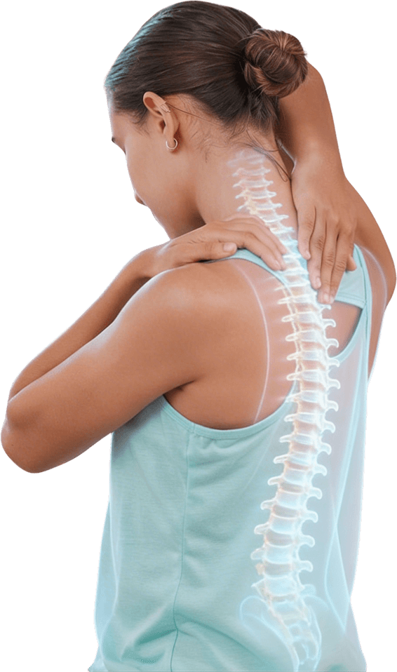
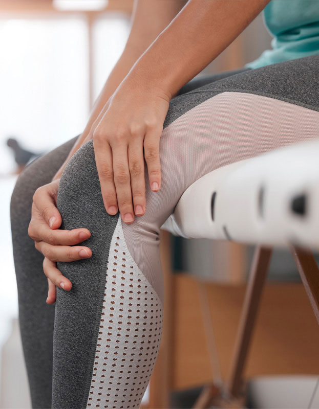
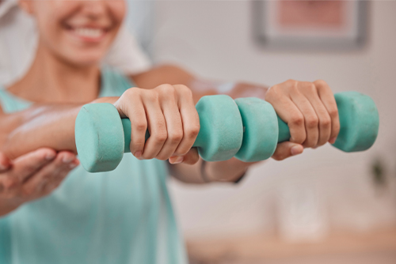
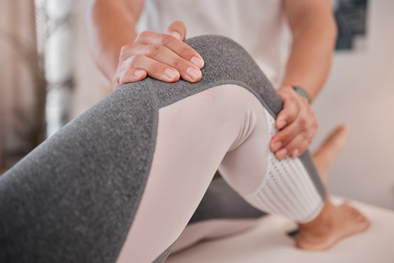

Přes 20 let zkušeností v oboru a neustálé vzdělávání v nejnovějších metodách.
Hledání příčin obtíží a srozumitelné vysvětlení postupu léčby pro každého klienta.
Široká škála metod od technik měkkých tkání až po specializované DNS koncepty.


S čím vám pomohu?
Sestavení individuálního programu dle kinesiologického rozboru:
- Kinesiologické vyšetření
- Kompenzační cvičení na míru
- Korekce svalových dysfunkcí a funkčních poruch
- Instruktáž cviků (strečink, stabilizace, mobilizace)
- Relaxační cvičení a techniky
- Měkké techniky a masáže
Trápí vás…
Obrátit se na mne samozřejmě můžete i pokud nemáte žádné potíže a chtěli byste jen některé cviky zkonzultovat.
Stejně tak, pokud vám obvodní či odborný lékař doporučí rehabilitaci. A nebo vás třeba jen občas bolí záda, a vy jste se rozhodli, že s tím konečně chcete něco udělat.
-
Poúrazové a pooperační stavy
Problémy s pohybovým aparátem po operaci (např. po zlomeninách či totálních endoprotézách, plastikách vazů), předoperační přípravná rehabilitace.
-
Bolesti páteře a zad
Vertebrogenní potíže, akutní a chronické blokády, bolesti krční, hrudní a bederní páteře, bolestivá kostrč, stavy po výhřezu plotének po operacích páteře.
-
Degenerativní a neurologická onemocnění
Artrózy, periferní parézy, stavy po CMP, roztroušená skleróza a další chronické stavy.
-
Vady držení těla a skoliózy
Komplexní terapie vadného držení těla, skolióz a plochonoží u dětí i dospělých.
-
Přetížení a ergonomie
Syndrom karpálního tunelu, tenisový loket, prevence svalových dysbalancí a poradenství ohledně ergonomie pracoviště. Prevence a kompenzace svalových dysbalancí a bolestí způsobených jednostranným přetěžováním.
-
Posilování
Poradenství s efektivním tréninkem při cvičení v posilovně.
Bc. Barbora Šestáková
Jsem fyzioterapeutka s více než dvacetiletou praxí. Vystudovala jsem fyzioterapii na 2. lékařské fakultě Univerzity Karlovy v Praze a dříve také ergoterapii na 1. lékařské fakultě UK. Osvědčení k výkonu zdravotnického povolání bez odborného dohledu jsem získala v roce 2011.
Zkušenosti jsem získala ve Fakultní nemocnici Bulovka, v soukromém rehabilitačním zařízení v Praze a od roku 2012 působím v Centru léčebné rehabilitace v Liberci. Při práci kladu důraz na individuální přístup, hledání příčin obtíží a srozumitelné vysvětlení postupu léčby, aby klient věděl, co a proč děláme.

Jakou mám certifikaci?
- Dýchání v kontextu centrované postury, 2007
- Dýchání jako prostředek terapie, 2008
- Fyzioterapie hlubokého stabilizačního systému, 2015
- Jak na poruchy dýchání, plicní rehabilitace (PhD. Kateřina Neumannová), 2019
- Komplexní terapie krční páteře, 2007
- Komplexní terapie bederní páteře a pánevního pletence, 2009
- Diagnostika a kinesioterapie u idiopatické skoliózy u dětí i dospělých, 2014
- Využití aktivní segmentální centrace u poúrazových a pooperačních stavů končetin, 2016
- Diagnostika a terapie poškození kolenního kloubu (Mudr R.Frei), 2019
- Diagnostika a fyzioterapie kolenního kloubu (Rehalab), 2021
- Diagnostika a terapie funkčních poruch, 2008
- Fyzioterapie funkce v klinické práci, 2011
- Komplexní terapie trigger pointů a globální reciproční svalová inhibice (PhD. Petr Bitnar), 2016
- Viscerovertebrální vztahy, 2015
- Pánev v globálním pohledu, 2024
- Pánev a SI kloub v józe, 2024
- Poruchy trávicího aparátu a jejich rhb řešení, 2024
- Komplexní rehabilitace ruky, 2013
- Individuální dlahování v terapii ruky, 2013
- Terapeutické využití kinesiotape (kinesiotaping), 2011
- Metodika senzomotorické stimulace, 2014
- Rotace: zdroj vitality, prevence zranění, 2024
- Fyzioterapie u dysfunkce pánevního dna a inkontinence, 2016
- Rehabilitační léčba některých druhů ženské sterility metodou Ludmily Mojžíškové, 2017
- DNS sport a fitness, část 1, (Rehabilitation Prague School), 2017
- DNS Fit Kid (DNS pro děti, Rehabilitation Prague School), 2019
- DNS běžecký speciál (Rehabilitation Prague School), 2022
- DNS Pánevní dno (Rehabilitation Prague School), 2024
Jaké využívám metody a postupy?
Manuální techniky
- Techniky měkkých tkání, mobilizace kloubů a páteře
- Relaxační a reflexní masáže (zády, nohy)
- Lymfodrenáž a baňkování
Aktivní terapie
- Práce s hlubokým stabilizačním systémem (HSS)
- Léčebná tělesná výchova a balanční cvičení
- Senzometrická stimulace a korekce pohybu
Specializovaná péče
- Gynekologická fyzioterapie (metoda Mojžíšové)
- Posílení svalstva pánevního dna a viscerální terapie
- Prvky z metod Kabat, Vojta a Brügger
Kolik fyzioterapie stojí?
Nejsme smluvní zařízení žádné pojišťovny, a nejsme proto schopni přijímat žádanky na rehabilitaci. Služby poskytujeme za přímou platbu, buď hotově, či kartou, po dohodě případně též na fakturu (fond kulturních a sociálních potřeb, atp.).